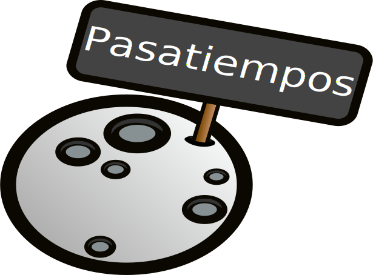

Caminatas
Caminar en senderos de los diferentes Parques Nacionales y donde sea que pueda caminar bastante rodeada de naturaleza.
Escuchar música
Escuchar música mientras viajo. Siempre abierta a nueva música.
Mis grupos favoritos son: Pink Floyd, Radiohead, The Smiths, ...
Salir
Pasar tiempos con mi familia y amigos, donde sea :)